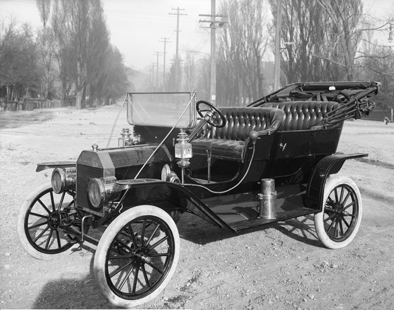

Patenteado em 29 de janeiro de 1886 por Karl Benz, o Benz-Patent Motorwagen tinha um motor monocilíndrico de quatro tempos e 954 cilindradas. Ele desenvolvia “impressionantes” 0.75 CV a 400 rpm e atingia velocidade máxima de apenas 16 km/h. Dotado de apenas três rodas, o Benz-Patent é, também, o primeiro carro da marca Mercedes Benz e chegou a ganhar duas séries especiais da montadora: uma produzida em 1980 e outra em 2002. Os carros foram parar nas mãos de colecionadores, que chegaram a desembolsar US$ 60 mil (R$ 311,4 mil) pelas relíquias.
